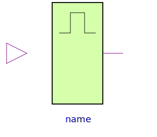
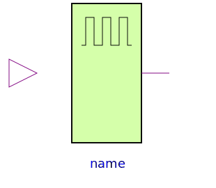

The sources are not taken from Standard Logic. They were added since they turned out to be quite useful, since such sources are often needed. For a better optical overview the colour green was chosen for the sources.
| Name | Description |
|---|---|
| Digital Set Source | |
| Step | Digital Step Source |
| Table | Digital Tabular Source |
|  Pulse | Digital Pulse Source |
|  Clock | Digital Clock Source |